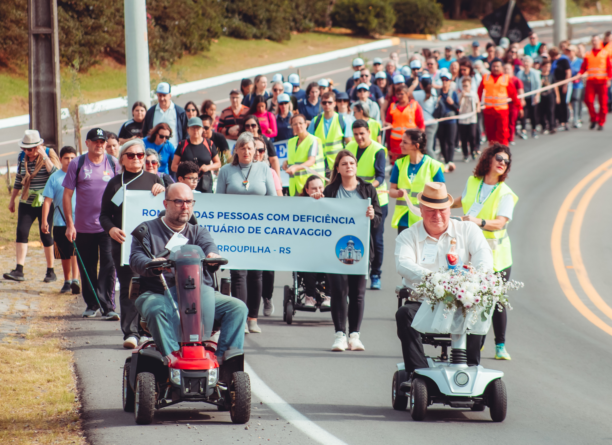

Romaria PcD a Caravaggio: fé e afirmação da causa em pauta
Desde 2023, a Associação Municipal de Deficientes Físicos de Farroupilha (AMDEF) coordena a Pré-Romaria das Pessoas com Deficiência ao Santuário de Caravaggio, em Farroupilha (RS). A comissão organizadora reúne as principais entidades dos municípios de Farroupilha e Caxias do Sul dedicadas ao universo PcD, prestando atendimento a mais de 900 pessoas e seus familiares.
A execução deste projeto envolve um planejamento rigoroso e o trabalho voluntário de dezenas de colaboradores. A preparação abrange desde a logística de saúde, segurança no trânsito e transporte acessível até a distribuição de alimentos e água, viabilizada por meio de parcerias com o poder público e patrocínios da iniciativa privada.
A iniciativa foi idealizada pelos casais Gilberto Adami e Maria Ester Rigo Adami, juntamente com Antonio Carlos Potrich e Ilma Neumann Potrich. Eles integram o Conselho Fundador da romaria ao lado do atual presidente da AMDEF e coordenador do evento, Giovani Antonio Capra.
O grupo lidera a comissão organizadora desde a primeira edição oficial da peregrinação, realizada em 22 de maio de 2022.

Registro institucional: 2ª Romaria das Pessoas com Deficiência, realizada em 21 de maio de 2023.

Consolidação do evento: 3ª Romaria das Pessoas com Deficiência, realizada em 17 de maio de 2025.
Ao longo de sua trajetória, o evento enfrentou suspensões estratégicas em respeito a critérios de força maior. A edição de 2024 foi cancelada em solidariedade ao povo gaúcho diante da calamidade climática no Rio Grande do Sul. Já em 2026, a 4ª Romaria foi suspensa devido a readequações técnicas de segurança junto aos órgãos públicos. Tais decisões reiteram o compromisso da AMDEF com a excelência de um projeto planejado para ser um marco de fé, superação e, sobretudo, de afirmação institucional da causa PcD.